佐賀県神埼郡吉野ヶ里町 代表 米光 知子 様
よもぎ蒸しのサロンは全国的に増えていますが、その多くは「国産のよもぎ」を売りにしています。Le,Ciel 様の強みは、そのちょうど裏返しです。
「普通のよもぎと違い、韓国産は香りが濃い」——このお話が一番の武器なので、同じ見せ方のまま、訴求だけを反転させました。冒頭3カットで「韓国から届いた／香りの濃さが違う／本場のよもぎ蒸しが」と畳みかけ、4カット目で「佐賀で、受けられます」と落とします。ここでスワイプの手が止まる設計です。
香りは映像に映りませんので、湯気の量・お湯の色の濃さ・よもぎの束の質感で「濃さ」を目に見える形にしています。
| 要素 | 今回の Le,Ciel 案 | 理由 |
|---|---|---|
| 画面の向き | 縦（リール比率） | Le,Ciel 様の公式チャネルが Instagram のため |
| 長さ | 45秒 | この業種で最後まで見てもらえる長さ |
| 音 | ナレーションなし・音楽のみ | リールは音を消して見る方が多く、テロップで伝わる形が強いため |
| テロップ | 明朝・小さめ・画面中央やや下 | サロンの上品さを壊さない出し方 |
| 組み立て | 空間 → 椅子 → 素材 → こだわり → 締め | 「どんなお店か」が短時間で伝わる順番 |
| 締めの言葉 | 「保存して、来てみてください」 | 保存されるとリールが伸びやすいため |
| いちばんの売り | 韓国産・本場・香りが濃い | ★ここが Le,Ciel 様だけの武器 |
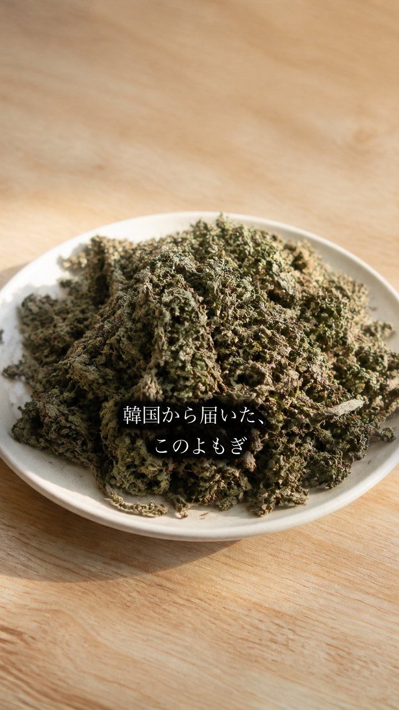
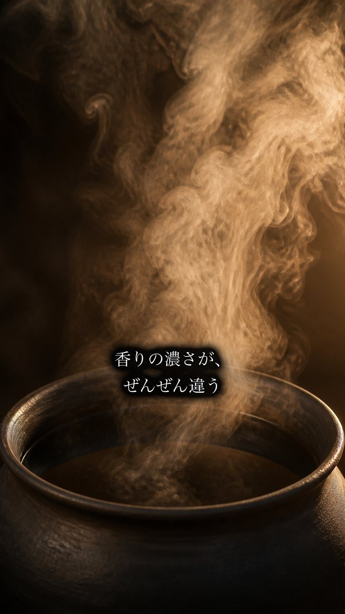
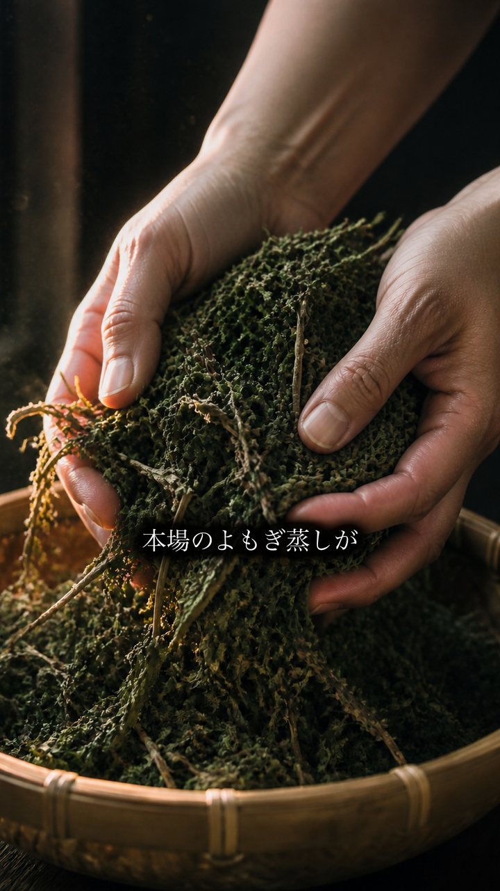
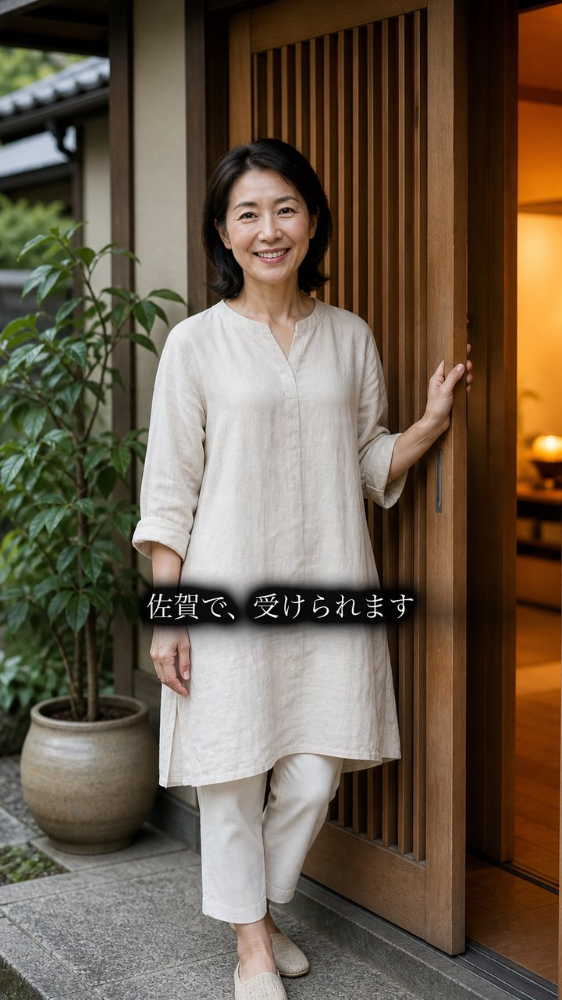
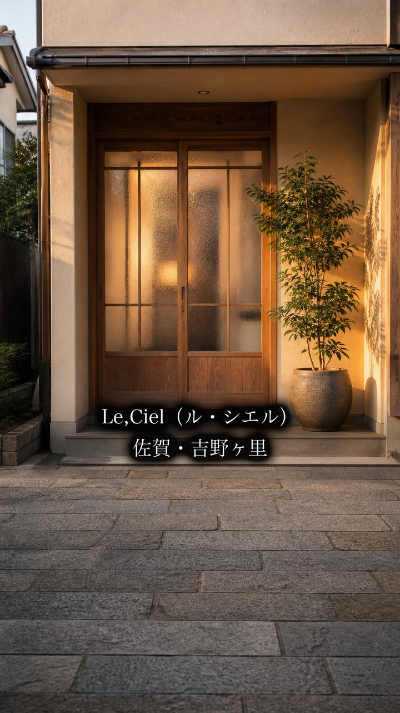
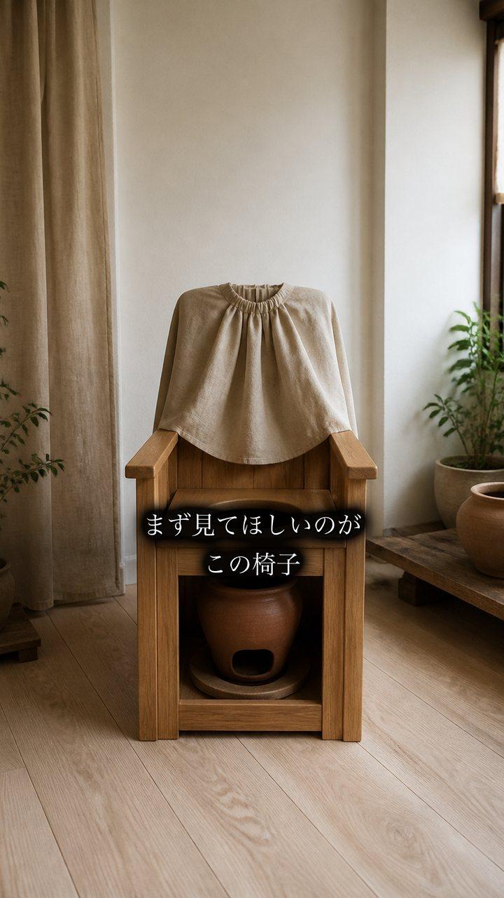
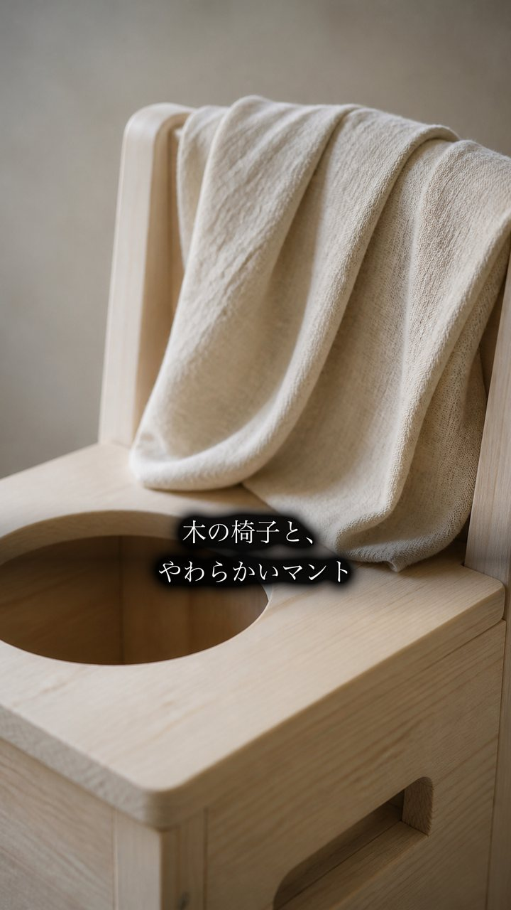
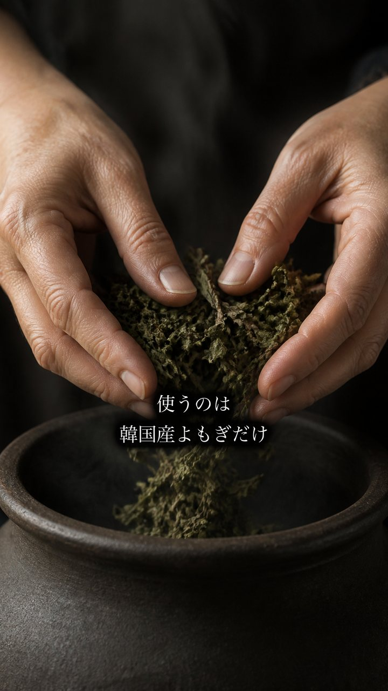
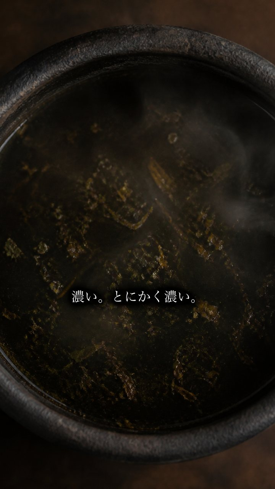
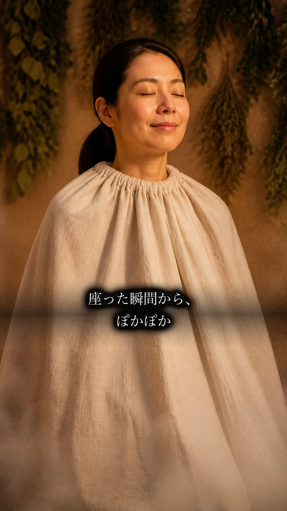
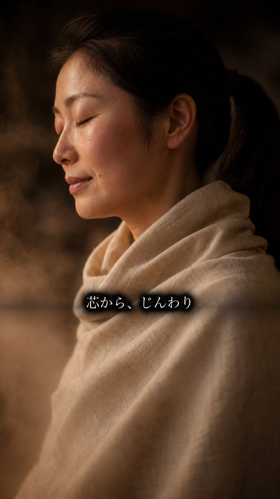
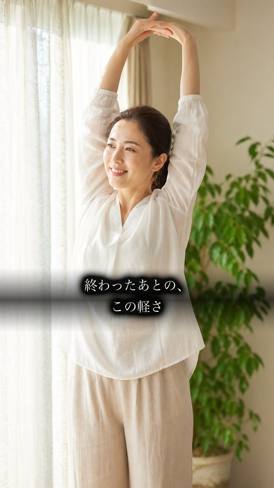
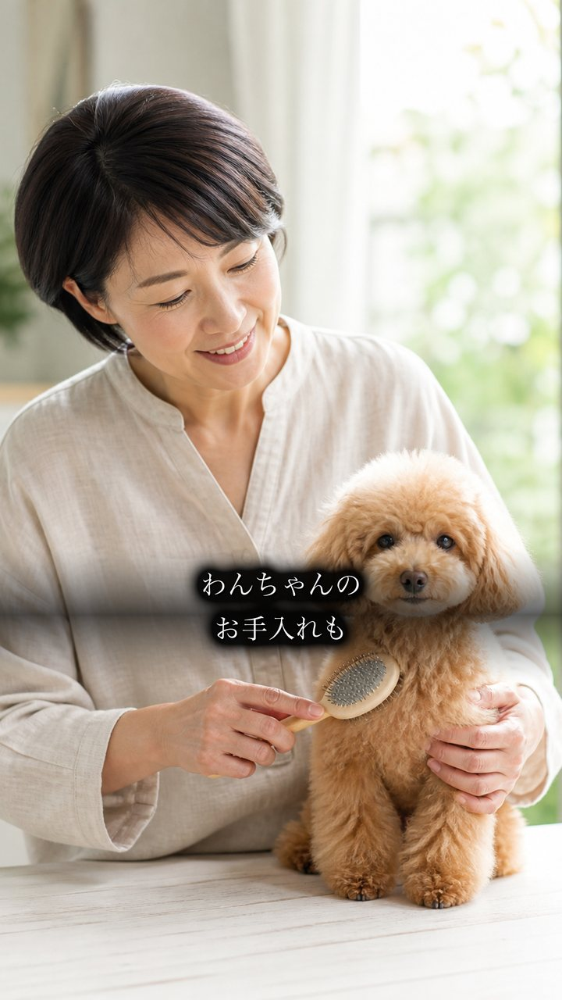
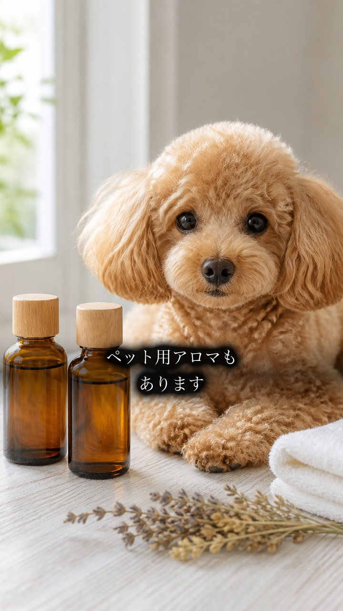
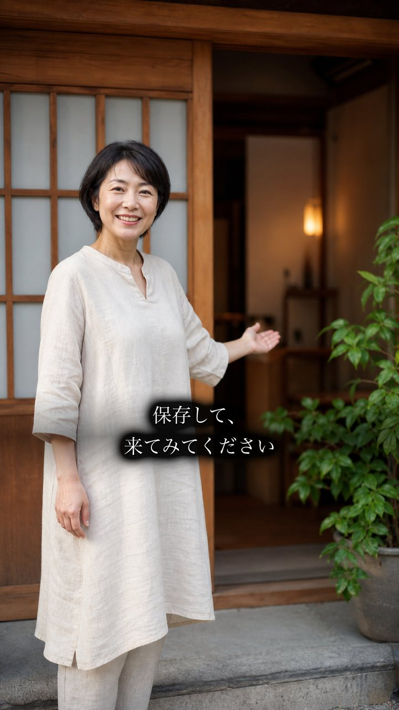
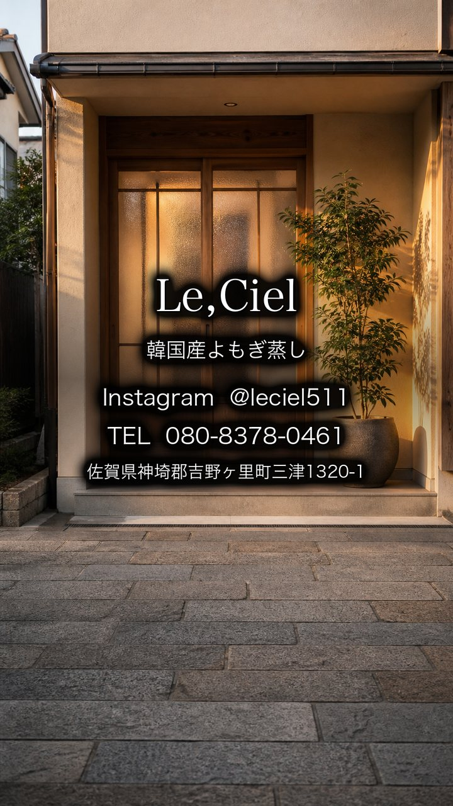
| 項目 | 仮の設定 | ご確認いただきたいこと |
|---|---|---|
| 画面の向き | 縦（リール） | Instagram前提でよいか。YouTube広告にも出すなら横長版もご用意します（下記） |
| 長さ | 45秒 | 30秒版も必要か |
| ナレーション | なし（音楽のみ） | リールは音を消して見る方が多いため、まずは音楽のみで作っています。声を入れたいかどうか |
| BGM | 落ち着いた癒し系 | もっと明るい／もっと静か のご希望 |
| 米光様のご出演 | お顔出しあり | ①お顔出しOK ②後ろ姿・お手元のみ ③ご出演なし |
| 屋号の表記 | Le,Ciel | ロゴ・看板の正式な書き方（カンマの有無） |
| ご住所の表記 | 佐賀県神埼郡吉野ヶ里町三津1320-1 | いただいたシートは「神崎郡」でしたが「神埼郡」で合っていますか。番地まで出してよいかも教えてください |
| 料金・営業時間 | 出していません | 出す場合は正確な数字をご共有ください |
| ハンドメイド雑貨 | 入れていません | 入れた方がよいか |
| 縦型（推奨） | 横長（別案） | |
|---|---|---|
| 組み立て | サロン紹介の連打（リール向きの型） | 悩み → 転換 → 解決の物語 |
| 音 | 音楽のみ | 女性ナレーション＋音楽 |
| いちばんの売り | 本場・韓国が佐賀で受けられる | 香りが濃い |
| 向いている場所 | Instagramリール・ストーリーズ | YouTube広告・ホームページ |